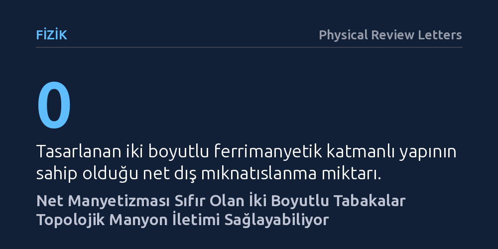

FIZIK · Physical Review Letters · 2026-10-26
Araştırmacılar, net manyetizması sıfır olan iki boyutlu ferrimanyetik hetero-yapılarda manyon Chern yalıtkanı durumunun ortaya çıkışını kuramsal olarak modelledi. Asimetrik katman etkileşimlerinin net mıknatıslanma olmadan ferromanyetler kadar güçlü topolojik manyon ısı iletimi sağladığını gösterdiler.
Dışarıya manyetik alan yaymayan malzemelerin de kayıpsız ve tek yönlü manyetik dalga iletimi gerçekleştirebileceğini gösteriyor.

Günümüz elektronik cihazları, elektrik yükünün iletkenler içindeki hareketi sırasında karşılaştığı direnç nedeniyle ciddi miktarda enerji kaybeder ve ısınır. Bu sorunu aşmak isteyen araştırmacılar, elektrik akımı yerine elektronların manyetik özelliklerini, yani spinlerini kullanmayı amaçlayan spintronik alanına yönelmiştir. Manyetik malzemelerde spinlerin dalgalanmasıyla oluşan ve "manyon" adı verilen kuantum uyarılmaları, hareketli bir elektrik yükü taşımaksızın bilgi ve ısı iletebilir. Böylece saçılma ve sürtünme kaynaklı enerji kaybı asgariye indirilebilir.
Ancak bu manyon dalgalarını belirli bir doğrultuda ve dağılmadan yönlendirebilmek için genellikle topolojik yalıtkanlık ilkelerine ve malzemede güçlü bir net manyetizmaya ihtiyaç duyulur. Ferromanyetik malzemelerde bulunan bu net manyetizma ise çevreye kaçak manyetik alanlar yayarak komşu bellek hücrelerinin birbirini bozmasına ve devrelerin minyatürleştirilmesinin zorlaşmasına yol açar. Öte yandan, net manyetizması sıfır olan geleneksel antiferromanyetik yapılarda ise simetri kuralları gereği yönlü manyon iletimi ortaya çıkamaz. Bilim insanlarının önündeki temel soru, hem dışarıya net manyetik alan yaymayan hem de kayıpsız topolojik manyon akımı taşıyabilen bir malzeme tasarımının mümkün olup olmadığıydı.
Araştırmacılar bu soruyu yanıtlamak için laboratuvarda numune üretmek yerine kuantum mekaniğine dayalı kuramsal fizik modellemeleri ve ilk ilkeler hesaplamalarına başvurdu. İki farklı atomik tabakanın üst üste getirilmesiyle oluşturulan iki boyutlu hetero-yapılar üzerinde çalışan araştırmacılar, Heisenberg ve Dzyaloshinskii-Moriya manyetik etkileşim modellerini birleştirdi. Hedef, iki boyutlu katmanlardaki zıt manyetik momentlerin birbirini tam olarak sıfırladığı tam telafili ferrimanyetik bir sistem inşa etmekti.
Ekip, katmanlar içindeki manyetik etkileşimlerin asimetrik hale getirilmesi durumunu matematiksel olarak modelledi. Yapılan hesaplamalar, katmanlar arasındaki bu asimetrinin "Tip-III" adı verilen kırık bant aralığı dizilimini tetiklediğini gösterdi. Bu dizilimde, iki ayrı katmanın manyon frekans aralıkları birbiriyle örtüşmeyerek ayrı kalıyor ve sistemin topolojik bir manyon Chern yalıtkanına dönüşmesine olanak sağlıyordu.
Hesaplamalar, tasarlanan bu iki boyutlu yapıda sıfırdan farklı Chern sayılarına sahip kiral kenar durumlarının ortaya çıktığını gösterdi. Malzemenin iç kısmı manyon iletimine kapalı bir yalıtkan gibi davranırken, sınır çizgileri boyunca manyon dalgaları tek yönlü olarak ve saçılmaya uğramadan ilerleyebiliyordu. Üstelik bu tek yönlü iletim, dışarıya hiçbir net manyetik alan yayılmadığı halde gerçekleşiyordu.
Çalışmanın en dikkat çekici bulgusu ise manyonların kuantum istatistiğine göre dağılımında görüldü. Zıt yönlü kiraliteye sahip manyon dallarının asimetrik biçimde uyarılması, geleneksel antiferromanyetlerde simetri nedeniyle engellenen devasa bir manyon termal Hall iletkenliği üretti. Kuramsal olarak öngörülen bu ısı iletkenliği, ferromanyetik malzemelerin sergilediği yüksek seviyelerle yarışacak güçteydi. Araştırmacılar, deneysel olarak üretilebilir durumdaki CrI₃/CrGeTe₃ ve CrI₃/CrSiTe₃ ikili katmanlarının bu davranışı sergileyecek ideal adaylar olduğunu belirledi.
Bu teorik sonuçlar, manyetik bellek ve kuantum bilgi işleme mimarilerinde uzun süredir var olan önemli bir açmazı çözebilecek bir yol haritası sunuyor. Dışarıya kaçak manyetik alan sızdırmayan, yani birbirini etkilemeden yan yana sıkıştırılabilen kararlı bellek hücrelerinin, aynı zamanda yönlü manyetik dalgalarla hızlı ve kayıpsız biçimde yönetilebileceğini gösteriyor.
Bununla birlikte, bulguların henüz bir laboratuvar deneyiyle doğrulanmamış kuramsal ve hesaplamalı bir modelleme olduğunu vurgulamak gerekir. İncelenen CrI₃/CrGeTe₃ ve CrI₃/CrSiTe₃ katmanlarının deneysel olarak kusursuz arayüzlerle üretilmesi, arayüz kusurlarının manyon saçılmasına etkisi ve gerçek çalışma sıcaklıklarında topolojik özelliklerin ne kadar korunacağı önümüzdeki deneysel çalışmaların yanıtlaması gereken açık sorulardır.